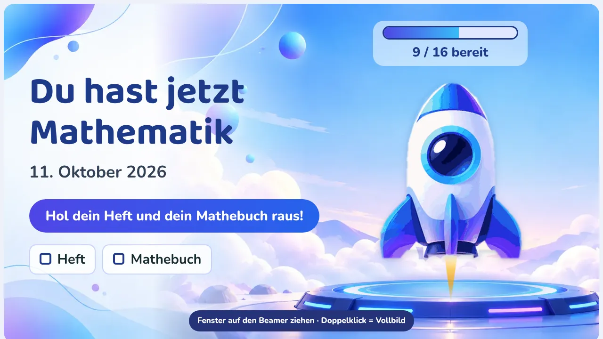
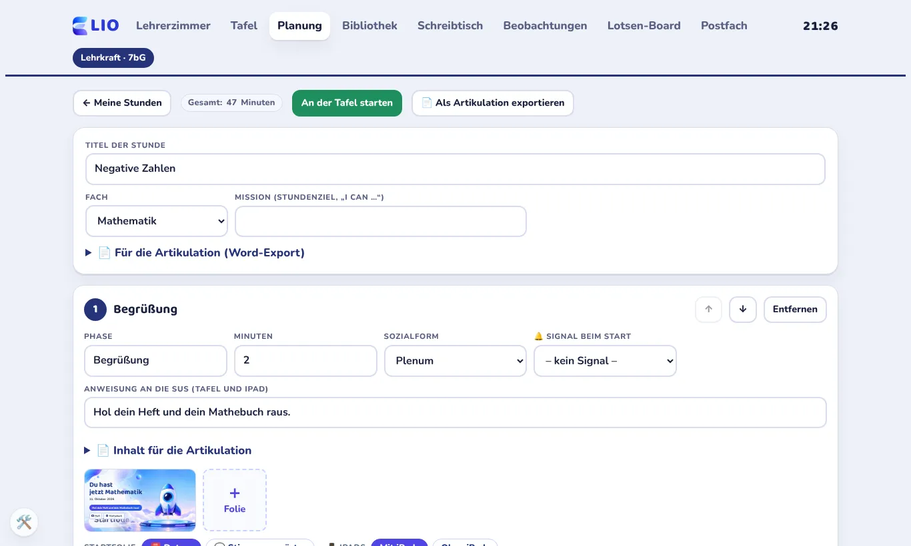
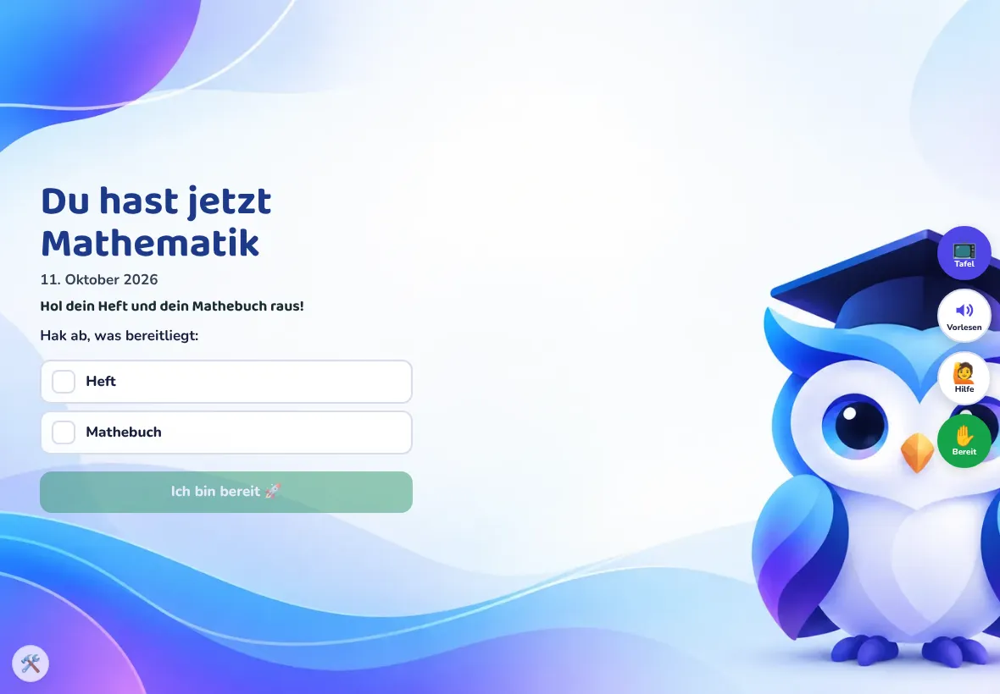

ELIO verbindet die Stundenplanung, die digitale Tafel und die iPads der Klasse in einer einzigen Anwendung. Entwickelt von einer Lehrkraft für den echten Schulalltag: einfach, datensparsam und ohne Rangliste.

Zur AnwendungStatt sechs Programmen für Planung, Folien, Abstimmungen, Timer, Übungen und Heft gibt es eine Oberfläche. Was die Lehrkraft plant, läuft direkt an der Tafel und auf den iPads.
Stunden nach Artikulationsschema, Folien im Editor, Wochenplan und Export der Artikulation als Word-Datei.
Folien, Timer, Wortwolke, Abstimmung, Exit-Ticket, Freeze und Bereit-Check. Gesteuert vom Laptop, gezeigt am Beamer.
Die Kinder sehen das Tafelbild, stimmen ab, melden sich und bekommen Aufgaben direkt aufs iPad.
Interaktive Übungen, Minitests, Regelheft, Lerntagebuch und Vokabelheft mit Wiederholung im richtigen Abstand.
Sterne für Fleiß, ein eigener Avatar mit Shop und Klassenziele, auf die alle gemeinsam hinarbeiten.
Elo liest vor, auch in der Erstsprache. Nachsprechen mit Rückmeldung und Übungen in drei Niveaus.

Phasen, Minuten, Sozialform und Material stehen in einem Gerüst. Werkzeuge wie Wortwolke oder Abstimmung hängen direkt an der Phase.

Auf den iPads sehen die Kinder, was an der Tafel passiert. Interaktive Aufgaben legen sich darüber, danach geht es weiter.
Vom Plan zur Tafel und zurück. Alles, was in der Stunde entsteht, landet bei den Kindern im Heft und bei der Lehrkraft im Überblick.
Am Vortag die Stunde im Gerüst anlegen oder aus der Börse übernehmen.
Ein Klick öffnet das Tafelfenster am Beamer. Die iPads verbinden sich über einen QR-Code.
Phasen weiterschalten, Wortwolke, Abstimmung, Timer und Übungen starten.
Hefteintrag, Lerntagebuch und Exit-Ticket. Die Lehrkraft sieht den Lernstand und Elos Tipps.
ELIO ist für Schulen gebaut. Deshalb gilt: so wenig Daten wie möglich, und was gespeichert wird, ist verschlüsselt.
Kinder melden sich mit Kürzel und PIN an und geben sich selbst einen Fantasienamen.
Beobachtungen und Notizen der Lehrkraft liegen verschlüsselt auf ihrem Gerät, nicht auf dem Server.
Lernstände, Nachrichten und Bilder werden auf dem Gerät verschlüsselt. Der Server in der EU sieht nur Zeichensalat.
Das Maskottchen hilft und ermutigt. Es vergibt keine Noten und stellt keine Diagnosen.
Fortschritt sieht jedes Kind für sich. Die Klasse sammelt gemeinsam auf ein Ziel.
Ein Assistent setzt Lernstände zurück. Stunden und Material bleiben erhalten.
ELIO wächst Schritt für Schritt, immer abgestimmt mit Schulleitung und Datenschutz.
ELIO läuft im Unterricht einer Klasse. Die Abstimmung mit Schulleitung und Datenschutzbeauftragten hat begonnen.
Stunden im Kollegium teilen, Klassenlisten importieren und mehrere Lehrkräfte pro Klasse.
Elo erkennt typische Fehler, gibt passende Hinweise und schlägt Übungen vor. Pseudonym und über einen Server in der EU.
ELIO für ganze Schulen, mit Vorbereitung auf den Quali ab der 9. Klasse.
Lehrkräfte melden sich mit ihrem Konto an. Schülerinnen und Schüler brauchen nur ihre Zugangskarte mit Kürzel und PIN.